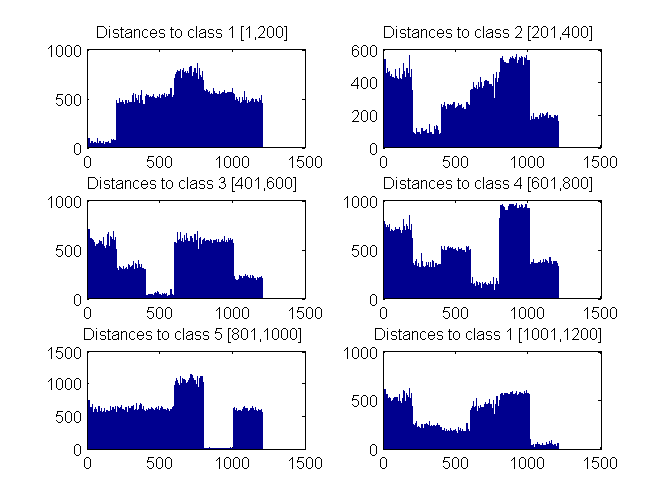

Contents
clc, close all, clear all
1st Part: Feature extraction
In this script a vector of 1200 obervations is created with 200 samples of each feature vector from random subimages of the original picture.
First image for classification
im1='D101.gif'; car4=zeros(1200,50); for i=1:200 car4(i,:)=car2(im1); close all end
Second image for classification
im1='D1.gif'; for i=1:200 car4(i+200,:)=car2(im1); close all end
Third image for classification
im1='D52.gif'; for i=1:200 car4(i+400,:)=car2(im1); close all end
Fourth image for classification
im1='D49.gif'; for i=1:200 car4(i+600,:)=car2(im1); close all end
Fifth image for classification
im1='D20.gif'; for i=1:200 car4(i+800,:)=car2(im1); close all end
Sixth image for classification
im1='D3.gif'; for i=1:200 car4(i+1000,:)=car2(im1); close all end
2nd part: Training process
Here a cell array of 'tags' is created with the corresponding names for each observation and it's corresponding class. After that a classifier X is created
% Creates an array of type 'cell' for the classes labels C=cell(1200,1); C(1:200)={'class 1, D101'}; C(201:400)={'class 2, D1'}; C(401:600)={'class 3, D52'}; C(601:800)={'class 4, D49'}; C(801:1000)={'class 5, D20'}; C(1001:1200)={'class 6, D3'};
The new classifier uses the pseudoLinear type since the observation matrix is not a square matrix. For computing the covariance uses the pseudoinverse matrix
X=fitcdiscr(car4,C,'discrimType','pseudoLinear')
X =
ClassificationDiscriminant
PredictorNames: {1x50 cell}
ResponseName: 'Y'
ClassNames: {1x6 cell}
ScoreTransform: 'none'
NumObservations: 1200
DiscrimType: 'pseudoLinear'
Mu: [6x50 double]
Coeffs: [6x6 struct]
Evaluation
Compute the Mahalanobis distance from each observation to each class
dist=zeros(1200,6); for i=1:1200 dist(i,:)=mahal(X,car4(i,:)); end figure, subplot(321),bar(dist(:,1)),title('Distances to class 1 [1,200]') subplot(322),bar(dist(:,2)),title('Distances to class 2 [201,400]') subplot(323),bar(dist(:,3)),title('Distances to class 3 [401,600]') subplot(324),bar(dist(:,4)),title('Distances to class 4 [601,800]') subplot(325),bar(dist(:,5)),title('Distances to class 5 [801,1000]') subplot(326),bar(dist(:,6)),title('Distances to class 1 [1001,1200]')